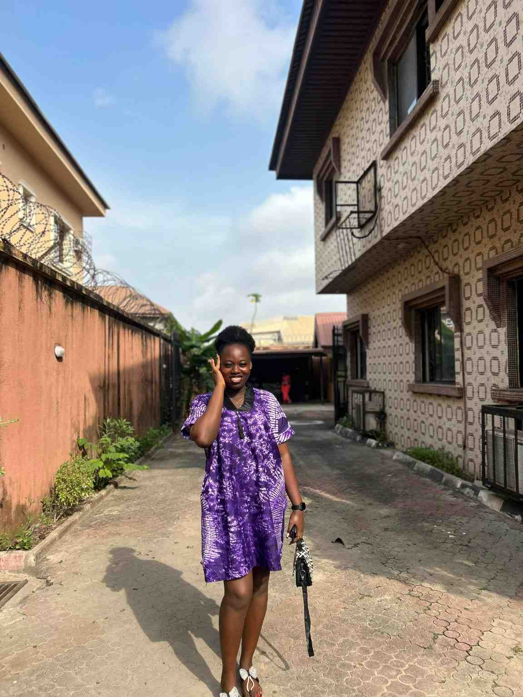

Mmadu favour Ngozi| WDD 130

My name is Mmadu favour Ngozi. I am friendly, hardworking, and determined person who enjoys learning new things and improving myself everyday. I have the passion of helping others and always strive to give my best in everything I do. I am currently pursuing my education while working towards my future goals.